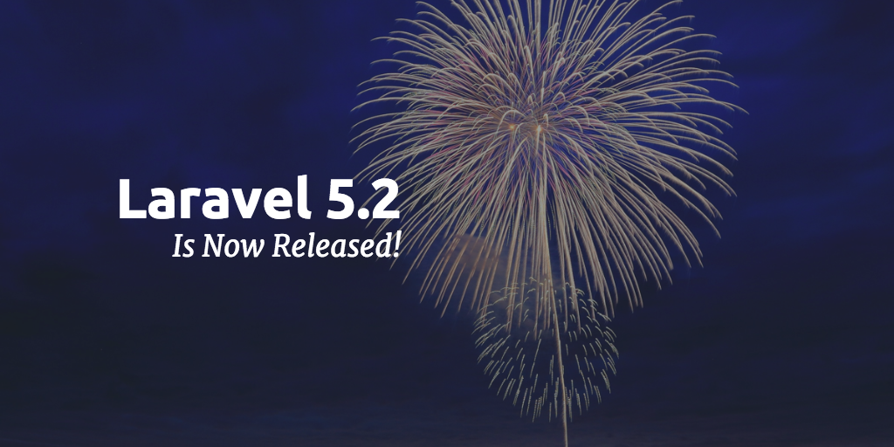
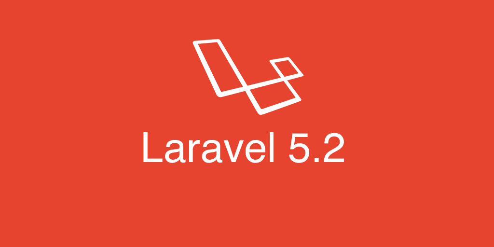
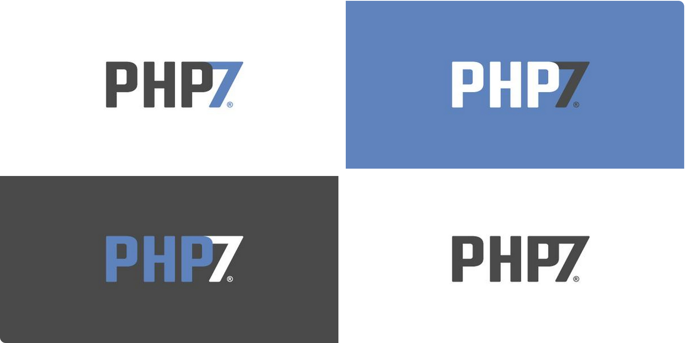

Laracon 开发者大会快报：听Taylor Otwell讲解
Laravel 5.3的新特性
Laravel 5.3的新特性
作者：王赛 .2016年7月28日

今天， Taylor Otwell 在 Laracon US 开发者大会上就 Laravel 5.3 的新特性
作了长时间的演讲，演讲内容主要概括为四个方面：Laravel Scout、Laravel Passport、
Laravel Mailable 和 Laravel Notifications。 此次演讲预定是
Laravel五岁了
作者：王赛 .2016年7月28日

五年前（2011年6月11日）的今天，Taylor Otwell 将 Laravel 带到了这个世界！
下面摘抄了部分原文：点这里看完整的原文 I've been working on this framework
for about 7 months. I've worked really hard to mak
2016版Laravel系列入门教程（一）
作者：Johnlui .2016年6月6日

本教程示例代码见：https://github.com/johnlui/Learn-Laravel-5 在任何地方卡住，
最快的办法就是去看示例代码。 本文基于 Laravel 5.2 版本，无奈 5.2 的中文文档还
没有跟上，大家勉强看一下 5.1 的吧： Laravel 5.1 中文文档： http:
2016版Laravel系列入门教程（二）
作者：Johnlui .2016年6月6日
本教程示例代码见：https://github.com/johnlui/Learn-Laravel-5 在任何地方卡住，
最快的办法就是去看示例代码。 本篇文章中，我将跟宝宝们一起学习 Laravel 框架最重
要的部分——路由系统。 如果你读过旧的基于 Laravel 5.0 版本的此教程，你会发现那篇文
2016版Laravel系列入门教程（三）
作者：Johnlui .2016年6月6日
本教程示例代码见：https://github.com/johnlui/Learn-Laravel-5 在任何地方卡住，
最快的办法就是去看示例代码。 在本篇文章中，我们将尝试构建一个带后台的简单博客系统。
我们将会使用到 路由、MVC、Eloquent ORM 和 blade 视图系统。 简单博客系统规划
2016版Laravel系列入门教程（四）
作者：Johnlui .2016年6月6日
本教程示例代码见：https://github.com/johnlui/Learn-Laravel-5 在任何地方卡住，
最快的办法就是去看示例代码。 本篇文章中，我将跟大家一起实现 Article 的新增、编辑
和删除功能，仔细解读每一段代码，相信本篇文章看完，你就能够 get Laravel 使用之道。
2016版Laravel系列入门教程（五）【完结】
作者：Johnlui .2016年6月6日
本教程示例代码见：https://github.com/johnlui/Learn-Laravel-5 在任何地方卡住，
最快的办法就是去看示例代码。 本文是本系列教程的完结篇，我们将一起给 Article
加入评论功能，让游客在前台页面可以查看、提交、回复评论，并完成后台评论管理功能，可以删除、编辑评论
Composer终于走到了v1.0版本
作者：王赛 .2016年4月6日

Composer 项目刚刚宣布在其第五个生日的同一天发布了 V1.0 正式版。
以下翻译自 Composer 创始人 Jordi Boggiano 的原文： 五年前的今天，Composer 诞生了。
在某些方面，这感觉就像昨天发生的事，至少它不像过去了五年。但在其他方面，好像是上辈子的事了，
没有一个完整的 PHP 生
Lumen5.2正式发布
作者：王赛 .2016年1月8日
.png)
Lumen 5.2.0 已经正式发布了！此次发布的版本包含了 Laravel 5.2 的组件并在核心理念
上做了重大改变。 建议所有 Lumen 用户阅读相关文档了解以下所提到的改变： 专注提供无
状态的 API 服务 Lumen 5.2 对 Lumen 进行了大瘦身专注于，并且将专注提供无状态的 JSON API 服务。
Laravel5.2正式发布
作者：王赛 .2015年12月22日

Laravel 5.2 正式版刚刚发布了，前边我们已经发过一篇文章列举了新版本带来的新特性，
有兴趣的同学可以再去看一下：Laravel 5.2 要发布了，来看看都有哪些新特性吧 。
话不多说，还是直接 composer install 并看文档吧！
Laravel5.2要发布了，来看看都有哪些新特性吧
作者：王赛 .2015年12月22日

Laravel 5.2 即将发布！它带来了哪些新特性？我们根据 Laravel 创始人
Taylor Otwell 在 Twitter 上发布的推文一起来梳理一下吧： 中间件组（Middleware Groups）
中间件组也许是你最希望得到的新特性，这一特性允许你为路由（route）设置一组中间件：
支持 MySQL
Laravel5.2正式发布
作者：王赛 .2015年12月4日

PHP 团队宣布 PHP 7.0.0 正式发布了。这一版本的发布标志着 PHP 7 新系列开始了。
PHP 7.0.0 带来了新版本的 Zend 引擎、各方面的提升以及新特性，比如： 性能提升：
PHP 7 是 PHP 5.6 的将近两倍 内存的使用显著降低 抽象语法树 一致的 64 位支持
许多重大的错误转为异常 安全
第1页/共5页
>